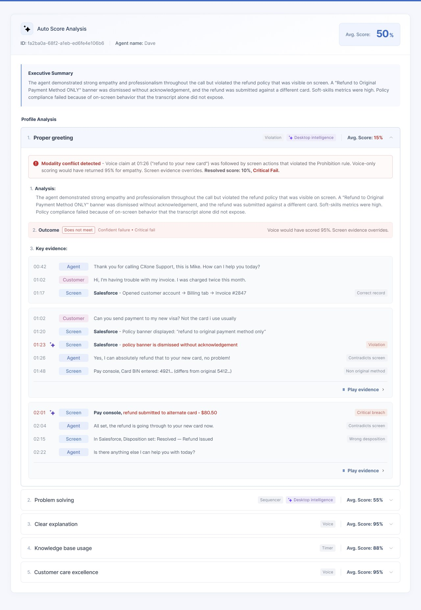
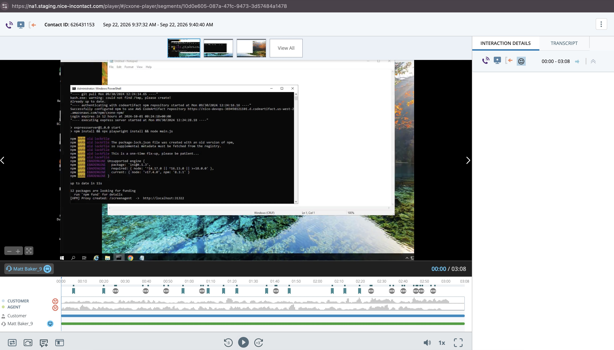
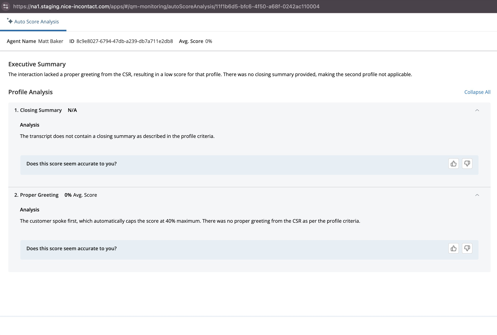
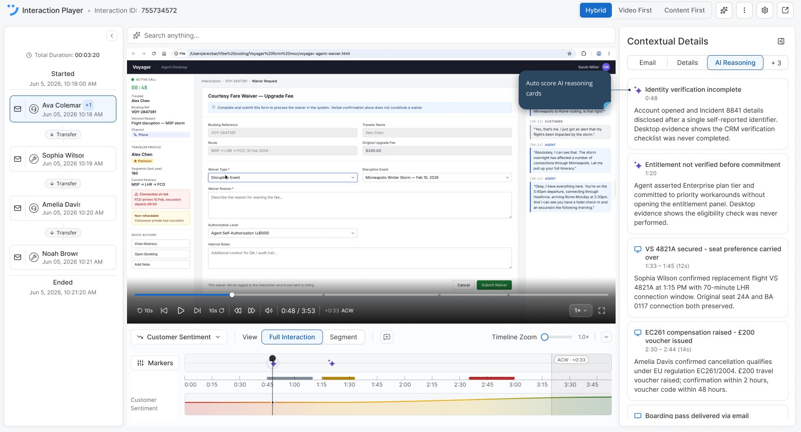
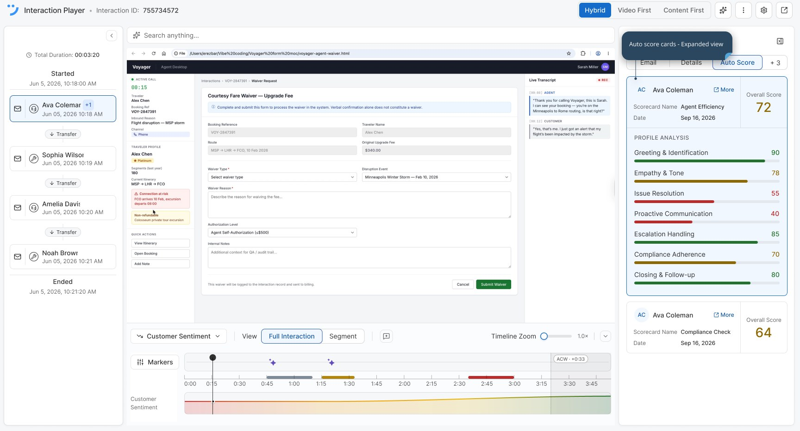

01 / Overview
AI-suggested evaluation with evidence, inside the player
Evidence Score turns quality evaluation from filling in a blank form into reviewing an AI-completed one, with every AI score tied to evidence the evaluator can hear in one click. After Evidence Score, the new numbers are 8 minutes or less per evaluation instead of 12–15, which takes a 150-agent QA operation from about 63 hours a week of evaluation to about 34.
The Impact
Evidence Score is projected to cut evaluation time by roughly a third to a half, which gives a 150-agent QA team back 19 to 29 hours every week, while making scores more consistent and defensible. Baselines come from customer research, and the new numbers come from testing the redesigned flow, as set out under How we measure success.
Deliverables
Research synthesis, competitive analysis, interaction design, React prototype for user testing, impact model
Snapshot

02 / Context
Context
Quality evaluation is a daily job done in one workspace: the recording player. Evaluators listen to a call, read the transcript and grade the agent against a scorecard, call by call.
The player has three parts that evaluators use together:
- Playback engine: listen to recordings with speed controls, skip and segments.
- Live transcript: word-by-word text synced to the audio, with speaker labels and timestamps.
- Evaluation form: a structured scorecard (for example “Empathy shown: Pass”, “Offered resolution: Partial”).
- 10/11Research roles that engage with the player
- 10/24Jobs-to-be-done that involve the player
- 70%Of all supervisor jobs-to-be-done covered by the player
03 / Problem
Problem
Evaluators have to leave the player to understand the score. The AI could already score calls, but the scores lived somewhere else, so the people who needed to trust them could not check them where they work.
Three problems followed from that split:
- No score visibility in playback. The evaluator works in the player, and the scores live in a separate place.
- Evidence is invisible. A score without the moment in the call that justifies it is a claim, not a result.
- Context switching breaks trust. Every trip between screens makes the evaluator doubt the number and redo the listening.
Problem statement: How might we let evaluators review AI-suggested scores, with evidence, without leaving the player?


04 / Research
Research & insights
I ran six customer interviews and added product-usage analysis to understand the evaluation workload and the way evaluators move between tools. The time cost is large: one QA manager overseeing 150 agents described a perfect world as two hours a day on quality management, yet the evaluation job alone is estimated at 63 hours a week for that operation.
| Evaluation load (from interviews) | Evals per week | Time per week |
|---|---|---|
| 25–50 agents | 50–100 | 12.5–25 hours |
| 25–50 agents | 125–250 | 31–62 hours |
| 60–150 agents | about 36 | 9 hours |
| 150 agents (modelled) | not captured | about 63 hours |
Insights that shaped the design
- Evaluators don’t want automation, they want a shortcut to judgment. Interviewees described Evidence Score’s value before they knew it existed: reduce back-and-forth between tabs, evaluate faster, get an auto summary, see chapters and flags while evaluating, and spot trends. The AI doing the first draft is the answer.
- Evaluation is already broken into pieces. Users switch between 5–6 apps a day (reports 100%, search 83%, quality management 83%, dashboards 83%) and work across 2–3 screens in parallel. Each role handles about 6 jobs-to-be-done, and Evidence Score targets the one that reclaims the most time.
- Design implication: not a new app, not a new tab to leave for. The feature has to reduce switching, not add to it.
05 / Competitive landscape
Competitive landscape
Every competitor I reviewed can auto-score calls, but none of the five connects the score to the audio moment inside the player. That gap - evidence you can click and hear where you evaluate - is where this feature differentiates.
| Capability | This product | Competitors with it (of 5) |
|---|---|---|
| Auto-scores 100% of calls | Yes | 5 |
| AI reasoning shown per criterion | Yes | 3 full, 2 partial |
| Click evidence, jump to audio moment | In development | 0 |
| Scores inside the native playback player | In development | 0 |
| Custom QA criteria and rubrics | Yes | 5 |
| Manual override by evaluator | Yes | 5 |
So auto-scoring, custom rubrics and override are table stakes. The design bet is on the two rows no one has: evidence that plays, in the player.
06 / AI capability
A first draft the evaluator can verify
Evidence Score suggests a Pass, Partial or Fail for every criterion on a scorecard, explains why, and points to the exact moment in the call that supports it. The evaluator reviews and decides; the AI never has the final word.
The design principle was that the AI’s value is only as large as the evaluator’s trust in it, so each capability is paired with a design decision that makes it checkable.
| AI capability | UX decision that makes it trustworthy |
|---|---|
| Suggests Pass, Partial or Fail per criterion | The form opens pre-filled, so the job becomes review instead of fill |
| Gives reasoning per criterion | An AI Reasoning tab shows evidence and reasoning inside the player |
| Cites evidence with timestamps | Click an evidence item to jump the audio to that moment, with the transcript highlighted |
| Knows how sure it is | A confidence bar shows model certainty next to each suggestion |
| Can be wrong | One-click confirm, or edit if the evaluator disagrees: AI assists, the human makes the final call |
| Scores against several profiles | An Evidence Score tab shows profile scores and the overall score, with scorecard selection and expand or collapse |
| Improves with use | Each submitted evaluation updates the trend, so history is visible in one place |


07 / AI UX approach
AI UX approach in the design process
I treated AI as a design material and as a design tool: the AI-first approach shaped what the interface does, and it also changed how the design work was done.
08 / Solution
Evidence Score inside the player
The solution brings AI scores, reasoning and evidence into the player as a new tab beside Interaction Details and Transcript, so evaluators never leave their workspace. It has three scopes.
Scope 1: Evidence Score details tab
A new tab with scorecard selection, a score summary, expand and collapse per criterion, and scores across all profiles. It has two views: an AI Reasoning tab with evidence and reasoning, and an Evidence Score tab with profile scores and the overall score.
Scope 2: Evidence timestamp navigation
Each evidence item under a score line has a timestamp. Clicking it jumps the audio to that moment and highlights the matching line in the transcript.
Scope 3: Search-to-player continuity
Opening Evidence Score from Search carries the score context into the player: no re-fetch, state preserved, a seamless switch.
09 / User journey
Before and after
The journey of a QA manager responsible for 150 agents shows what changes: every criterion stops being a separate listening hunt, and her goal of two hours of quality management a day becomes reachable.
| Step | Before: fill the form | After: review the form |
|---|---|---|
| 1 | Open the recording. The audio player loads next to a blank evaluation form. | Open the call. The form is already pre-filled, with evidence links beside each criterion. |
| 2 | Read criterion 1, then scrub to find the opening and listen. | Read the criterion, click the evidence link, and the audio jumps to that exact moment. |
| 3 | Fill the score, then repeat for criteria 2, 3 and 4. Each criterion is a new listening pass: 12–15 minutes in total. | Confirm with one click or edit if she disagrees. The confidence bar shows model certainty. |
| 4 | Submit, open the next call and start over. No memory between calls, no trend visibility. | Submit. The trend updates automatically and history is visible in one place. |
10 / Impact
Impact
Evidence Score is projected to cut evaluation time by roughly a third to a half, which gives a 150-agent QA team back 19 to 29 hours every week, while making scores more consistent and defensible. Baselines come from customer research, and the new numbers come from testing the redesigned flow, as set out under How we measure success.
Time: the headline number
| Measure | Baseline (confirmed in research) | After Evidence Score (Impact) | Change |
|---|---|---|---|
| Time per evaluation | 12–15 minutes | 8 minutes or less | about 33–47% faster |
| Weekly evaluation load, 150 agents | about 63 hours | about 34 hours | about 29 hours reclaimed |
| Conservative case: 30% time reduction | about 63 hours | about 44 hours | 19 hours reclaimed |
Business value
- Evaluation efficiency. Evaluators spend time judging, not searching.
- Scoring consistency. Evidence-anchored scores reduce differences between evaluators (inter-rater variability).
- Capacity. QM managers can run more evaluations with the same headcount.
- Defensibility. Enterprises get QA scores backed by evidence, which matters in audits and agent disputes.
- Competitive differentiation. Click-to-evidence inside the native player is something none of the five competitors reviewed offers, which makes it a sales proof point.
How we measure success
| Metric | What it tells us | How we measure it |
|---|---|---|
| Time per evaluation | Does the review workflow reach 8 minutes or less? | Timed evaluations in user testing of the new flow against the 12–15 minute baseline: 8 minutes or less (about 33–47% faster) |
| AI suggestion acceptance rate | Do evaluators trust the suggestions enough to confirm them? | Share of AI suggestions evaluators confirm unchanged versus edit or override, logged per criterion. Low acceptance on a criterion flags where the AI needs improving. |
| Scoring consistency improvement | Do scores vary less between evaluators? | Score variance between evaluators grading the same calls, with and without evidence-linked suggestions (inter-rater agreement). |
| Usability score | Is the review workflow easy to use? | Standard usability survey (SUS) plus task success and time on task in moderated sessions with real evaluators. |
From filling scores to reviewing them: a fundamentally different relationship with evaluation.
11 / Reflection
Reflection
- Trust is a design problem, not a model problem. The model’s score was only useful once evidence, reasoning and confidence sat next to it, in the place where the work happens.
- Design the review, not the automation. Users asked for a shortcut to judgment, so the interface was built around confirming and overriding, not around the AI’s output.
- Finding the gap in the market. Competitors matched on scoring; the open space was evidence you can play inside the native player.
- A working prototype changes the conversation. Testing a React prototype with real users and handing it to engineering shortened the path from idea to build.